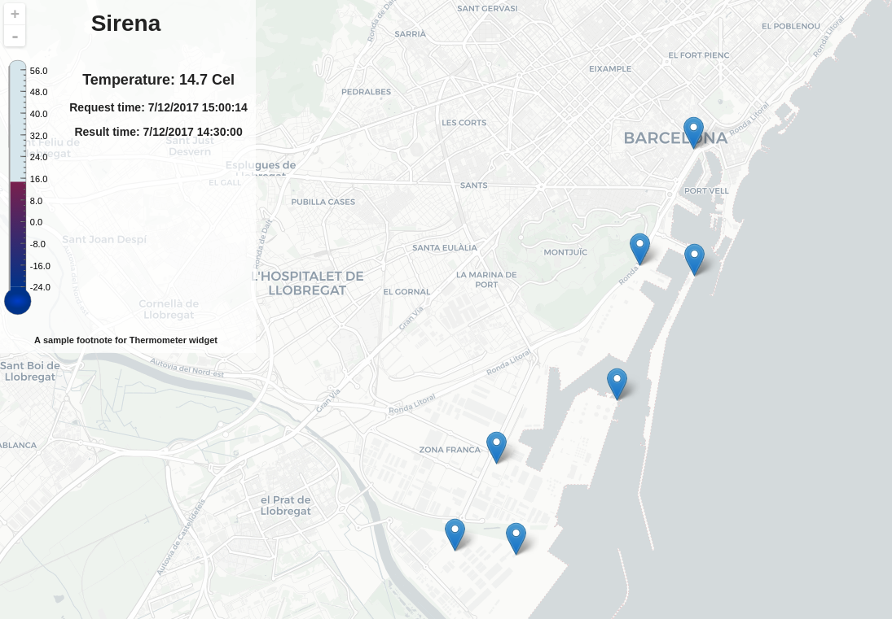

Note
Fecha Autores 8 Noviembre 2017
- Wladimir Szczerban
©2017 Wladimir Szczerban
Excepto donde quede reflejado de otra manera, la presente documentación se halla bajo licencia: Creative Commons (Creative Commons - Attribution - Share Alike: http://creativecommons.org/licenses/by-sa/3.0/deed.es)
En el portal de sensores del Port de Barcelona [1] podemos encontrar una serie de componentes gráficos o widgets que permiten acceder a los datos de los diferentes sensores SOS [2]. También podemos acceder directamente al servicio http://sensors.portdebarcelona.cat/sos/json si queremos implementar nuestros propios componentes o procesar los datos directamente.
En la documentación del servicio vemos que estos widgets implementan un cliente SOS que soporta la versión 2.0 de estándard. Los widgets necesitan un endpoint en formato JSON. Lo cual resulta no ser un requisito del estándar si no una funcionalidad opcional que proporciona la implementación del servidor SOS de 52 north en su versión 4.0.0 o superior.
La ventaja de utilizar los widgets es que proporcionan una capa de abstracción que hace el “trabajo sucio” y evita trabajar directamente con el servicio.
La implementación de los widgets es open source [3] y extensible, lo que permite poder desarrollar nuestros propios widgets.
Para crear un visor de mapas utilizaremos el widget de Mapa [4] que está basado en la librería de mapas Leaflet [5].
Crear una carpeta con el nombre de visor-port.
Crear un archivo con el nombre de index.html dentro de la carpeta.
Abrir el archivo index.html con un editor de texto y copiar el siguiente código.
<!DOCTYPE html>
<html>
<head>
<title>Sensores Port de Barcelona</title>
<style>
#map-container {
position: absolute;
top: 0;
left: 0;
bottom: 0;
right: 0;
}
</style>
</head>
<body>
<div id="map-container"></div>
<script src="http://sensors.fonts.cat/js/SensorWidgets.js"></script>
<script type="text/javascript">
SensorWidget('map', {
"service": "http://sensors.portdebarcelona.cat/sos/json",
"offering": "http://sensors.portdebarcelona.cat/def/weather/offerings#30m",
"swap_axis": true,
"features": [],
"properties": []
}, document.getElementById('map-container'));
</script>
</body>
</html>
Abrir el archivo index.html en el navegador para confirmar que carga un mapa del mundo. Este mapa no contiene ninguna información.
Agregar algunas features (sensores) en la matriz de features. Para obtenter las features tendríamos que hacer una petición de GetFeatureOfInterest [6] . Para agregar algunos elementos en el mapa reemplazar la propiedad features por lo siguiente:
"features": [
"http://sensors.portdebarcelona.cat/def/weather/features#01",
"http://sensors.portdebarcelona.cat/def/weather/features#02",
"http://sensors.portdebarcelona.cat/def/weather/features#03",
"http://sensors.portdebarcelona.cat/def/weather/features#P4",
"http://sensors.portdebarcelona.cat/def/weather/features#10",
"http://sensors.portdebarcelona.cat/def/weather/features#P5",
"http://sensors.portdebarcelona.cat/def/weather/features#P6"
],
Recargar el mapa y confirmar que aparecen unos puntos en el puerto de Barcelona.
Agregar propiedades a los sensores. Ya tenemos algunos sensores en nuestro mapa pero no tenemos datos asociados a los mismos. Para ello indicar que propiedades queremos observar. Esto lo indicaremos en la matriz de properties de nuestro mapa. Agregar las siguientes propiedades para ver la temperatura
"properties": [
"http://sensors.portdebarcelona.cat/def/weather/properties#32M",
"http://sensors.portdebarcelona.cat/def/weather/properties#32",
"http://sensors.portdebarcelona.cat/def/weather/properties#32N"
],
Recargar el mapa y pasar el cursor sobre algún elemento para ver que se despliega un panel con las temperaturas.
Combinar varios widgets en la aplicación. Mostar un popup con un widget al hacer click sobre un elemento. Utilizar la opción popup_widget del mapa. Cargar un widget de tipo serie de tiempo con las temperaturas. Escribir justo debajo de las propertities lo siguiente:
"popup_widget": {
"name": "timechart",
"title": "Temperatures",
"properties": [
"http://sensors.portdebarcelona.cat/def/weather/properties#32M",
"http://sensors.portdebarcelona.cat/def/weather/properties#32",
"http://sensors.portdebarcelona.cat/def/weather/properties#32N"
],
"time_start": "2015-09-03T05:05:40Z",
"time_end": "2015-09-03T08:05:40Z"
}
Recargar la página y clicar sobre un elemento para ver un popup con la serie temporal de las temperaturas.
Mostrar un widget en un div fuera del mapa al hacer click sobre un elemento. Escribir justo debajo de donde declaramos el div del mapa lo siguiente
<div id="info-container"></div>
Crear un nuevo estilo para este div. Escibir en nuestro apartado de estilo css
#info-container {
position: absolute;
top: 0;
left: 0;
width: "200px";
z-index: 9000;
background-color: rgba(255,255,255,0.7);
}
Quitar la opción de popup_widget del mapa.
Utilizar la opción de on_click del mapa. Esta opción permite definir una función que se ejecuta al hacer click sobre un elemento del mapa. Copiar debajo de las properties lo siguiente:
"on_click": function(el){
console.log(el);
}
Recargar la página y clicar sobre un elemento. Abrir la consola de desarrollador para ver que aparece la información del elemento clicado.
Crear una función que recibe como parámetro el id de un elemento y crea un widget de tipo termómetro. Escribir antes de donde se cierra el tag de script
function showTermometro(feature_id){
SensorWidget('thermometer', {
"service": "http://sensors.portdebarcelona.cat/sos/json",
"offering": "http://sensors.portdebarcelona.cat/def/weather/offerings#30m",
"feature": feature_id,
"property": "http://sensors.portdebarcelona.cat/def/weather/properties#32",
"refresh_interval": 120,
"footnote": "A sample footnote for Thermometer widget"
}, document.getElementById('info-container'));
}
Llamar a la nueva función showTermometro dentro de la función del on_click. Escribir luego del console.log
showTermometro(el.feature.id);
Recargar el mapa y clicar sobre un elemento para ver como se desplega el widget del termómetro con la temperatura actual.

| [1] | http://sensors.portdebarcelona.cat/?lang=es |
| [2] | http://sensor-widgets.readthedocs.io/es/latest/sos.html |
| [3] | https://github.com/oscarfonts/sensor-widgets |
| [4] | http://sensor-widgets.readthedocs.io/es/latest/widgets.html#mapa-map |
| [5] | http://leafletjs.com/ |
| [6] | http://sensor-widgets.readthedocs.io/es/latest/sos.html#getfeatureofinterest |